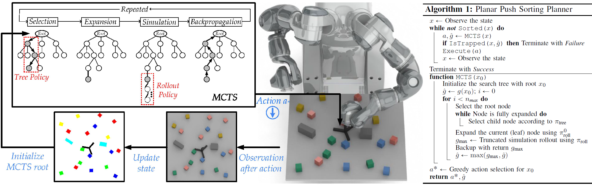

Multi-Object Rearrangement with Monte Carlo Tree Search:
A Case Study on Planar Nonprehensile Sorting
IROS 2020
-
Haoran Song*
HKUST -
Joshua A. Haustein*
KTH -
Weihao Yuan
HKUST -
Kaiyu Hang
Yale -
Michael Y. Wang
HKUST -
Danica Kragic
KTH -
Johannes A. Stork
Örebro Univ.
Abstract
In this work, we address a planar non-prehensile sorting task. Here, a robot needs to push many densely packed objects belonging to different classes into a configuration where these classes are clearly separated from each other. To achieve this, we propose to employ Monte Carlo tree search equipped with a task-specific heuristic function. We evaluate the algorithm on various simulated and real-world sorting tasks. We observe that the algorithm is capable of reliably sorting large numbers of convex and non-convex objects, as well as convex objects in the presence of immovable obstacles.
Technical Video
Motivation
In this work, we are interested in large-scale non-prehensile rearrangement problems, where a robot pushes multiple objects simultaneously to reach a goal that is characterized by the final poses of many objects. Specifically, we consider the planar non-prehensile sorting task illustrated. Here, a planar pusher has to sort objects belonging to different classes into homogenous distinct clusters. The problem is challenging for the following reasons:
- Much higher dimensionality of search space
- Complex multi-object, multi-contact dynamics
- Relative position matters for the sorted states
Inspired by the success of AlphaGo, we propose to address this problem with Monte Carlo tree search. MCTS is a planning algorithm for sequential decision-making problems and also well suited for addressing the challenges in the sorting task:
- The algorithm can search in high-dimensional state spaces by only performing a forward search. This allows us to employ available physics engine to predict the outcome of actions that involve complex multi-contact dynamics.
- The algorithm employs an adaptive sampling strategy that focuses its search on the parts of the state space that are relevant to solve the problem. This is particularly important as the sorting task has a large state space, and modeling its multi-contact physics is computationally expensive.
- MCTS requires no explicit target states but instead can be applied when there is only a discriminative function to evaluate whether a state is a goal. This is the case in the sorting task, where the goal is defined through relative positions of objects rather than absolute positions.
Architecture
We adapt the MCTS algorithm to the sorting task and propose a heuristic reward signal that successfully guides the algorithm towards sorted states to reduce the need for long physics rollouts. Starting with an unsorted state x, our sorting algorithm repeatedly runs MCTS to obtain the best action for this state, executes the action, and observes the result. The sorting algorithm terminates in case a sorted state is reached. This process is illustrated above.
Although a completely random rollout policy guarantees probabilistic completeness, it is much more sample effective to select actions in an informed way in the rollout phase. For this reason, we generate labeled data by running our planner with a random rollout policy and produce a training dataset from successful sorting results. The policy network is then trained to map the states to the probability distribution of the action space and thereby improve sampling efficiency.
Experiments
BibTeX
@article{song2019multi,
title={Multi-Object Rearrangement with Monte Carlo Tree Search: A Case Study on Planar Nonprehensile Sorting},
author={Song, Haoran and Haustein, Joshua A and Yuan, Weihao and Hang, Kaiyu and Wang, Michael Yu and Kragic, Danica and Stork, Johannes A},
journal={arXiv preprint arXiv:1912.07024},
year={2019}
}